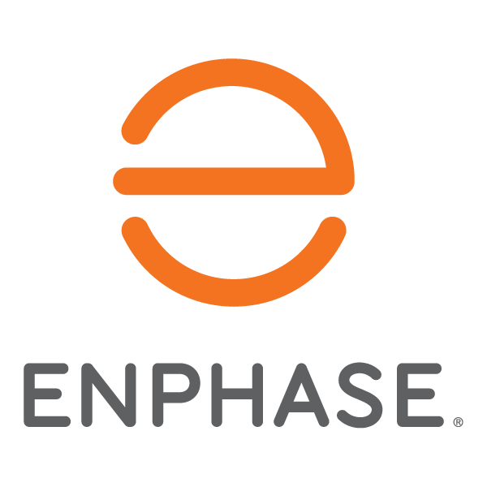
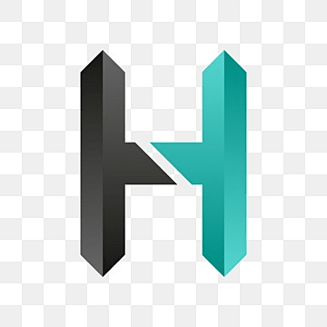

Harsh Vivek
Londhekar
Software Engineer
Building intuitive and performant solutions — from distributed systems to immersive interfaces.

Harsh Londhekar
MS Computer Science · Stony Brook University
I'm a Computer Science graduate student at Stony Brook University with professional experience in software engineering, specializing in performance testing, automation, and full-stack development.
My technical journey spans from building distributed systems and iOS applications to creating automated testing frameworks and performance optimization solutions.

MS in Computer Science
Stony Brook University, New York
Aug 2024 – May 2026
Distributed Systems · Visualization · Wireless & Mobile Networks

B.Tech in Computer Science
Vellore Institute of Technology, India
Jul 2019 – Apr 2023 · GPA 8.82/10
Deep Learning · NLP · DBMS · AI · Operating Systems

Amazon
Quality Assurance Engineer Intern
Seattle, WA
May 2025 – Aug 2025
- Implemented end-to-end UI test automation for a large-scale data analytics platform using Cypress & TypeScript, expanding coverage from 0% to ~85% and boosting release confidence
- Reduced manual validation effort by ~83% per release (from ~5 hrs to ~45 mins per stage) by automating integration test flows
- Saved ~15 mins of smoke testing per code review through end-to-end automation, accelerating delivery cycles
- Designed a modular, scalable test architecture (page objects, reusable steps, workflow orchestration, data-driven suites)
- Built custom Cypress commands, API helpers, and stability utilities, eliminating flaky CI tests
- Automated validation of critical business workflows — filters, saved views, exports, and cross-grid consistency
- Enforced maintainability standards with TypeScript typing, ESLint, Prettier, and standardized constants
- Authored a technical design document and collaborated with SDEs in peer reviews
- Set up CI/CD pipelines and automated deployments to alpha/beta/gamma using AWS Fargate for the Hydra test platform

Enphase Energy
Associate Software Engineer
Bengaluru, India
Jan 2023 – Aug 2024
- Built Django REST Framework release tracker dashboard (Jira integration)
- Automated UI workflows (Python + Selenium) reducing manual effort by 90%
- Automated Jira ticket filing (85% time reduction)
- Improved performance test coverage by scripting JMX files (75%+ increase)
- Developed APIs to SQL → Grafana dashboard data pipeline
- Automated 30+ load-testing scenarios with Jenkins (40% faster testing)

Hectra Services
iOS App Developer Intern
New Delhi, India
May 2021 – Oct 2021
- Developed front-end using Storyboard
- Integrated backend services using Google Firebase
- Added Google Maps SDK increasing user engagement by 25%
- Led front-end design improvements enhancing cross-platform consistency by 20%

Sentinel-ES
Multi-agent SRE system with 3 parallel AI agents (Sleuth, Historian, Scribe) coordinated by an Orchestrator for autonomous incident response. Real-time anomaly detection via ES|QL queries against rolling baselines in Elasticsearch. Async investigation pipeline correlating APM errors, GitHub commits, and runbooks — end-to-end resolution in under 10 seconds, with Slack one-click rollback and human-in-the-loop guardrails.

3D Flight Visualization System
Interactive 3D platform for analyzing albatross flight trajectories with synchronized sensor analytics. Streaming CSV parsing (>90 MB datasets) with Web Workers + PapaParse — <15s load time, 40% less memory. Incremental rendering pipeline for 1M+ points with altitude-based coloring and linked time-range selection.

Distributed Banking System
Fault-tolerant banking system in Golang using Modified Paxos for consensus and Two-Phase Commit for cross-shard coordination. Optimized throughput and latency for 3000-item datasets.

Context-Aware Notification System
Real-time sensor-based notification filtering for smartphones — 92% accuracy for indoor/outdoor detection, 95% reliability for activity recognition. Adaptive, ML-based, and battery-optimized.

Software Modeling Tool
Multi-diagram software development tool with drag-and-drop UI for flowcharts, database diagrams, and fishbone diagrams. 30%+ time savings with cross-platform compatibility.
harsh.londhekar@stonybrook.edu LinkedIn
linkedin.com/in/harshlondhekar GitHub
github.com/Harsh4601